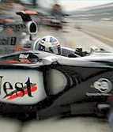

Richard Wooldridge's Homepage |
|
|
Hello. Thanks for checking out Richard Wooldridge's website. I am he. I was born 28th February, 1978. My star-sign is Pisces. I had my horoscope done by my mum's friend Kath, who is an expert. She said a typical Pisces is Imaginative and sensitive Compassionate and kind Selfless and unworldly Intuitive and sympathetic |
|
|
This is exactly right. I am all of these things. I was a bit annoyed that she hadn't mentioned intelligence
but when I asked her if Pisces was intelligent she said definitely. I was embarrassed to ask if Pisces are
good lovers because my mum was in the room, but I know the answer is yes. If any ladies are reading, and want
to find out if this is true, please e-mail me. If you are a bloke, please do not e-mail me pretending to be
a lady who is up for it. (I'm bored of that rubbish). |
|
| Work: |
|
I am chief photocopier in a controls company in coventry, which is
quite close to where I live. If you need anything photocopying,
please e-mail me. (No time wasters. I'm too busy).
My life is like Ibiza Uncut. I have been known to party until 3am and then get up at 7am to go to work WITHOUT A HANGOVER!!! (Never get hangovers, don't believe in them.) My defence, your honour, is that I have the maddest mates this side of a mental home. |
| Hobbies: | |
|
I built a car; its a Caterham 7 and it hasn't fallen to bits yet! |
I also do Jiu-Jitsu. I am a Ginger belt, sorry Orange Belt. |
| Sport: | |
|
My favourite Formula One driver is David Coulthard.  I would like to meet Steve Davis. I think he is very interesting. I would like to talk to him about the possibility of having a Ginger ball in snooker. |
|
| Other Stuff About Me: |
|
Top 10 Films Back to the Future Back to the Future 2 Back to the Future 3 That other film with Michael.J.Fox in The Net Apollo 13 Wargames Shawshank Redemption Armageddon Lord of the Rings Favourite Actor Michael.J.Fox Favourite Band Reef (saw them live) Favourite Songs The Power of Love (Theme from Back to the Future) Angels - Robbie Williams Bohemian Rhapsody - Queen Another Day In Paradise - Phil Collins Favourite Color: Ginger Favourite Seasoning: Ginger Favourite Biscuit: Ginger Favourite Spice Girl: Ginger Favourite Drink: Ginger Beer |